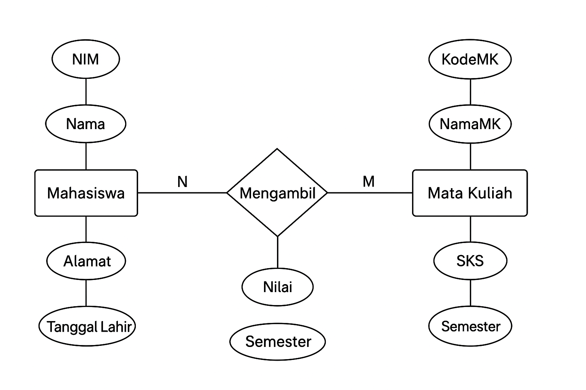

Entitas
Entitas adalah objek nyata, konsep, atau peristiwa yang datanya perlu disimpan dalam basis data.
Setiap entitas mewakili sekumpulan objek sejenis misalnya sekumpulan mahasiswa, sekumpulan produk, atau sekumpulan transaksi.
Jenis entitas
- Entitas Kuat
- Bisa berdiri sendiri tanpa bergantung pada entitas lain.
- Biasanya memiliki primary key sendiri.
- Contoh: Mahasiswa punya Nim dan Produk punya ID Produk
- Entitas Lemah
- Tidak bisa berdiri sendiri; bergantung pada entitas kuat.
- Biasanya identitasnya berasal dari entitas lain.
- Contoh: Detail Transaksi bergantung pada entitas Transaksi dan Produk.
Contoh Entitas
- Entitas: Mahasiswa
- Atribut: NIM, Nama, Alamat, Tanggal Lahir, No. HP
- Primary Key: NIM
Attribute
Atribut adalah ciri, karakteristik, atau informasi detail yang dimiliki oleh suatu entitas atau relasi.
Setiap atribut menjelaskan satu aspek data dari entitas tersebut.
Jenis Attribute
- Atribut Kunci (Key Attribute)
- Digunakan sebagai identitas unik untuk membedakan tiap entitas.
- Contoh: NIM pada entitas Mahasiswa, ID Produk pada entitas Produk.
- Atribut Sederhana (Simple Attribute)
- Nilainya tunggal dan tidak bisa dipecah.
- Contoh: Nama, Harga.
- Atribut Gabungan (Composite Attribute)
- Terdiri dari beberapa komponen.
- Contoh: Nama Lengkap bisa dipecah menjadi Nama Depan dan Nama Belakang.
- Atribut Multinilai (Multivalued Attribute)
- Bisa memiliki lebih dari satu nilai untuk satu entitas.
- Contoh: Nomor Telepon (bisa lebih dari satu).
- Atribut Turunan (Derived Attribute)
- Nilainya bisa diperoleh dari atribut lain.
- Contoh: Umur bisa diturunkan dari Tanggal Lahir.
- Atribut Relasi (Relationship Attribute)
- Atribut yang melekat pada hubungan, bukan pada entitas.
- Contoh: pada relasi Mahasiswa mengambil Mata Kuliah, atributnya bisa berupa Nilai atau Tanggal Ambil.
Relasi
Relasi adalah hubungan antara dua atau lebih entitas yang menggambarkan interaksi di antara mereka.
Relasi menentukan bagaimana data saling terhubung dalam sistem basis data.
Derajat Relasi
- Unary Relationship
- Relasi dari entitas ke dirinya sendiri.
- Contoh: Pegawai membawahi Pegawai lain.
- Binary Relationship
- Relasi antara dua entitas. (paling umum)
- Contoh: Mahasiswa mengambil Mata Kuliah.
- Ternary Relationship
- Relasi antara tiga entitas.
- Contoh: Dokter menangani Pasien dengan Obat.
Kardinalitas
- Menunjukkan jumlah keterhubungan antar entitas dalam relasi.
- Contoh kardinalitas:
- One to One (1:1): Satu entitas A hanya berhubungan dengan satu entitas B.
- One to Many (1:N): Satu entitas A dapat berhubungan dengan banyak entitas B.
- Many to Many (M:N): Banyak entitas A dapat berhubungan dengan banyak entitas B.

Contoh Entity Relationship Diagram